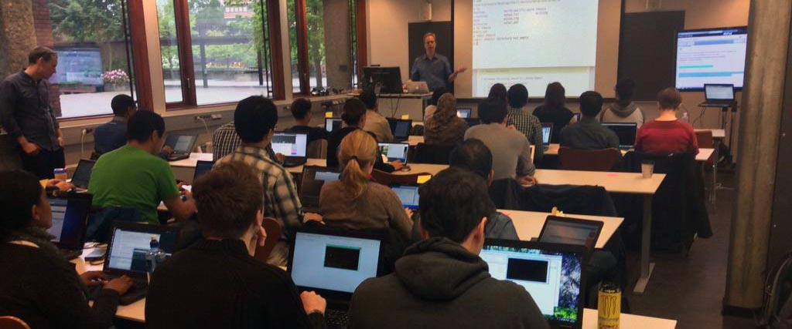

Helping at the Software Carpentry course, June 2--3rd Oslo run by Lex Nederbragt, certainly gave me a lot to consider. The two-day course taught novice users Bash, Git, and Python (Jupyter Notebook). Three invaluable and complimentary tools which are the centre of my own work-flow. I was excited to see how people were introduced to these tools and the Software Carpentry teaching methods. The collaborative Git-based lesson materials are especially nice, and I can only hope this teaching model spreads far and wide. I certainty appreciated running through the course material, and in particular I don't remember seeing a clearer introduction to Git and Bash.
Myself, I stumbled into the use of Bash, Git and Python one-by-one over time and learned alone through a lot of trial-and-error (and Youtube) over a relatively long period of time. So I was quite curious to see how the students would absorb so much information so quickly, and if it would really change the way they intend to work in the future. The students were very competent, and I got the feeling that they quickly realized the possibilities for these tools. In fact there was very little for the helpers to do, as the students (and even their computers) were all operating excellently!
The Software Carpentry Information for helpers and teaching instructions was superb, and certainly gave me a few things to consider. I had seen Greg Wilson, the creator of Software Carpentry talk about some of the ideas underpinning the group on Youtube (for example see here), and had been meaning to follow his suggested readings on the subject of teaching (such as How learning Works by Susan Ambrose et al). Following the course recommendations about the use of language and computer etiquette to students was a valuable experience: for example, not using the word 'just' (as they consider that it immediately sets a tone of inaccessibility), and not taking-over keyboards when students run into trouble or using short-cuts to fix problems. These were quite an adjustment at first, as without being aware of it, these actions were definitely my default setting ("Ah, a problem? You should just do thing x! **while I type a blur of short-cut keys**" - I can see how that might be sub-optimal for student-learning...). So I immediately felt making the small changes the course suggested forced me into a much more user-friendly state for the students!
To improve the course though, I think that I would have tried to emphasise some real-world use cases from the Jupyter Notebook. As, even if the students can't understand yet how they were built, they would at least see what is be possible. For me at least, seeing people working at a high-level in these tools was a big motivation for self-improvement, as I realised that these were the tools that could take your work to a new level and were the tools worth investing time in learning. By only presenting a simplified use cases I got the feeling that although everyone probably left with a good handle on what was covered, perhaps they were still largely unaware of the possibilities in Python and the Jupyter Notebook for Open Science, which for me is the most interesting and exciting part.
Go Top
comments powered by Disqus